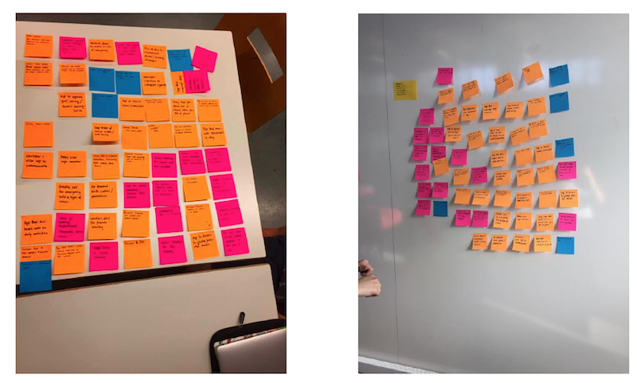

CHALLENGE
Create a smartwatch application to promoting health and wellness.
PROCESS
Brainstorming
While brainstorming for a potential app idea, we all stayed as open-minded as possible to any ideas that fit into the broad scope of the health and wellness field. As a result, our 50 ideas were extremely diverse in nature and ranged from apps that allowed schizophrenic users to detect the presence of others in a room, to ones that caused the physical device to vibrate in a way such that it would cancel out shaking in users who were prone to tremors.

After sifting through our app ideas and using Figma to mock up 8 of them, we ultimately settled on 3 final ideas. The first was an app that allows users with Alzheimer’s to tap watches with a loved one and bring up pictures/memories of the two together so that they’re better able to remember them. The second was an app that tracks breathing in children with lung conditions so that parents/guardians can monitor irregular or fatal breathing patterns when the child is unsupervised. Our final idea was an app that tracks efficiency of a user’s sleep and user’s depressive tendencies in order to visualize the correlation between the two, then reminds the user to sleep earlier if there is a positive correlation. Of those three ideas, we decided to continue to expand upon the second and created several mocks that communicated our initial vision for the parent’s and child’s watch app.
Contextual Inquiry
For each interview we made sure that we went through a predetermined set of questions outlined for each target user group, but also allowed for a free and open conversation to take place. For these interviews, we utilized a master-apprentice style process to observe our interviewees with asthma as they walked us through what it looked and felt like to go through an asthma attack in their homes (everything from initial chest pains to the process of using an inhaler/nebulizer).
Tasks and Themes
Most of the older children tended to keep an inhaler with them in case of an asthma attack during the day.
It was very common for younger children to accidentally forget their inhalers at home.
The interviewees who had asthma said their condition was typically activated/aggravated by allergies and/or physical activity.
Many of the child interviewees and the doctor we interviewed stressed the importance of remaining calm during an attack, as panicking would only make the situation worse.
Top User Needs
Child users prefer any sort of device to be inconspicuous/not interfere with daily activities.
Child users with asthma need a feature that helps them calm down and regulate breathing, as asthma attacks can trigger panic attacks.
Child users, especially younger ones, need a way to remember to bring their medication with them.
Child users need a way to communicate with bystanders for help, as asthma attacks make it nearly impossible to speak.
Parents/caregivers want a quick way to see how their child is doing without having to sift through lots of data and information.
Initial Wireframes
In approaching and developing design ideas for our app, and taking our contextual inquiries into account, we realized that it would be targeting two diverging audiences: children with asthma, and the parents/caregivers who watched over them. Because both of these user groups had such differing needs, we decided to alter our original mocks and exclusively dedicate the smartwatch portion of our application to children, and the smartphone to parents. Additionally, as our app would be used in emergencies, we wanted to ensure that both the watch and phone had a clean and calming design — ultimately making them easier to navigate during stressful situations.
Low-Fidelity Mockups
After sketching out our initial wireframes, used Figma to create low-fidelity mockups of our screens. We maintained our initial desire to keep the app as minimal and calming as possible by using very few colors and simplifying any language we used — something that was especially important for the watch app, as children as young as 5 could potentially be using it. Because we knew our audiences were diverging, we also made the decision to make the color schemes across the watch and phone apps slightly different. While both are simple, the smartwatch application has a more playful feel because of the brighter colors we used, ultimately making it more suited towards the younger audience that would primarily interact with the watch. The phone, however, has more muted colors as it’s geared towards an older audience.
User Studies
We aimed to find out which aspects of our design were best serving user needs and which aspects needed
work, or didn’t address a user need at all. For these studies we interviewed two users. User One was a 45-year-old woman who is a parent to a child with asthma, and User Two was a 21-year-old man, who grew up with mild to severe asthma and continues to have occasional asthma attacks.
Findings: Caregivers were mainly frustrated with the app’s confusing use of colors and unclearness in what certain measurements meant, whereas child users wanted a way to know that their alert had been
received by their parent, and expressed difficulty in holding a screen to cancel a notification, as their finger completely obstructed the view of the screen.
User Flow
We modified our intermediate designs in Figma and created a
user flow. Our final user flow attempted to address the user needs that were brought up in our user interviews. To address the user who expressed concern about colors being confusing on the phone app in the previous iteration, we made sure to display colors with intention in our final design, exclusively using green to express a healthy state and red to express an emergency. On the child’s end, we made sure to show a toast that told them their message had been successfully sent to their parent, and also eliminated the ‘Hold to Cancel’ screen that caused so many difficulties. Instead, we implemented a two-step cancellation process that would be easier for users to navigate, while simultaneously reducing the chance of an accidental cancellation.
Competitive Analysis
In our competitive analysis we found two companies which focused on monitoring a user’s respiratory rate: Owlet and Asthma Tracker. Owlet is an app focusing on the well-being of babies with respiratory issues. Our second competitor was Asthma Tracker, an app which allows users to monitor their own vitals by inputting their own details of their attack.
Findings: In terms of design we learned that softer colors, like those used in Owlet, were probably best for a calming experience for the user. Additionally, we lessened the amount of input fields in attempt to make the experience as seamless as possible.
High-Fidelity Prototype
On our main functioning screens, we decided to change our overflow option icon, located at the top right corner, into a settings gear icon. This made sense since the overflow option only resulted in one option, which was to go to the user’s settings. This meant that a user would have had to click the overflow icon and then select “Settings” to navigate to the settings screen. This was an additional step which we found unnecessary. With a settings gear, our option was more straightforward than before. We also slightly modified the colors of the smartwatch app screens, specifically the color of our whale, to create a more calming visual aesthetic for the child user and match the parent’s phone colors a little more closely. Lastly, we changed the “emergency” button on the watch screen to a “help” button, simplifying the language since our users are young children.
OUTCOME
Breezy ensures the safety of children struggling with asthma attacks, and provides peace of mind to the caregivers who watch over them. The child’s smartwatch constantly reports their vitals to the caretaker’s phone, and sends an emergency alert if it detects any anomalies that could signal the onset of an asthma attack. In addition to this automatic sensing, the child has the option to send an alert through the watch manually. If an attack is reported, the watch allows users to play a distress message that alerts bystanders and provides breathing exercises to stabilize and calm down the child. Meanwhile, the caregiver is alerted with their child’s location and current vitals so that they can quickly respond to the situation. The caregiver can also review the history of the child’s vitals over time.